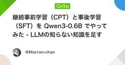

機械学習タグが付けられた新着記事 - Qiita
https://qiita.com/tags/機械学習
機械学習に関する情報が集まっています。現在16153件の記事があります。また9436人のユーザーが機械学習タグをフォローしています。
フィード
onnxruntime-web の WebGPU 推論でだけ細い部分が欠ける：原因の切り分けとモデルの差し替え
機械学習タグが付けられた新着記事 - Qiita
本文この記事はZennに投稿したものの転載です。元記事: https://zenn.dev/uekibachidan/articles/6e04f595d3bedbブラウザだけで動く背景削除ツール Kirinukuma（https://kirinukuma.ue...
6時間前

継続事前学習（CPT）と事後学習（SFT）を Qwen3-0.6B でやってみた - LLMの知らない知識を足す
機械学習タグが付けられた新着記事 - Qiita
はじめに素の Qwen3-0.6B-Base に Claude Code の使い方を聞くと、存在しないコマンドが返ってきます。同じ質問を、公式ドキュメントで継続事前学習（CPT） したモデルと、そこへさらに LoRA で SFT を重ねたモデルに聞くと、答えはこう変わり...
13時間前
【技術解説】【完全ガイド】楽天証券APIのPython実装方法とエラー解決
機械学習タグが付けられた新着記事 - Qiita
楽天証券APIのPython実装方法とエラー解決本記事では、楽天証券APIを利用してPythonで金融データを取得し、自動売買システムを構築する方法について解説します。必要なライブラリのインストールから、APIの基本的な使い方、よくあるエラーとその対策、さらに実践的なデ...
15時間前
実録・ゲーム強化学習適用記 #4 ― 画一化（モード崩壊）を打破せよ：単一モデルに個性を宿すFiLM神経網の導入
機械学習タグが付けられた新着記事 - Qiita
はじめに対戦ゲームAIの画一化（かくいつか）の克服：単一モデルでキャラクターの個性を生かすFiLMニューラルネットワーク構造RPGや対戦格闘ゲームの環境でAIエージェントを学習させていると、よく直面するジレンマがあります。何十種類もの多様なキャラクターが、それぞれ異な...
15時間前